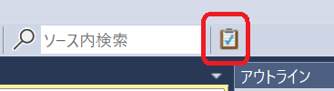
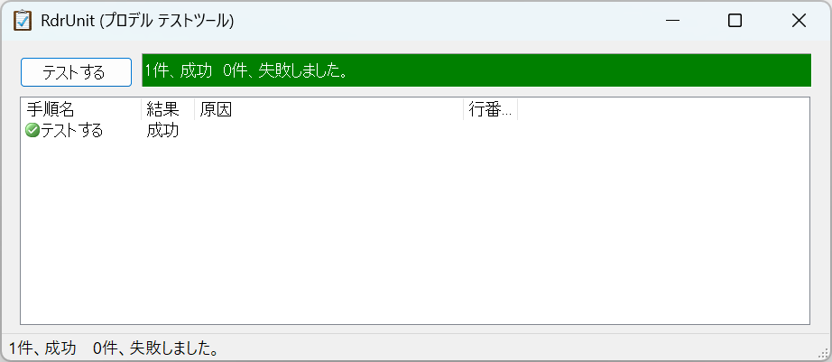
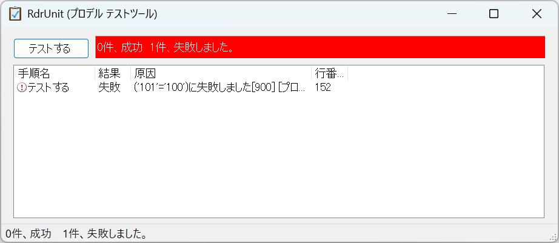
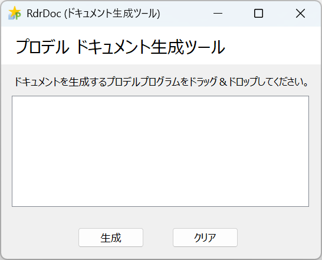
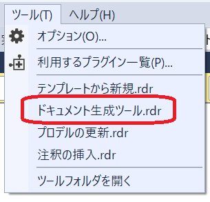
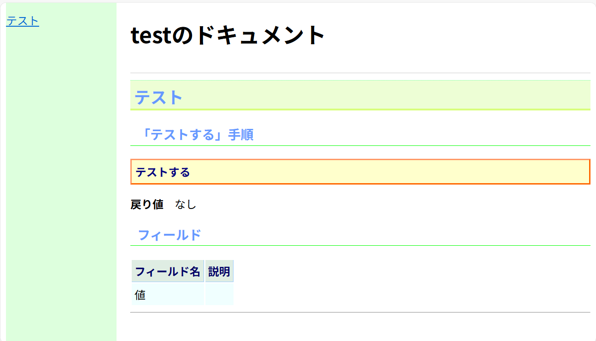

プロデルデザイナのツール
単体テストツール(RdrUnit)
プロデル テストツールとは、プロデルで作成したプログラムが正常に動作するかどうかを チェックするための単体テスト支援ツールです。
プロデルでプログラムを作成した上で、そのプログラムが正しく動作するかどうかを確認するテストケースを作成し、テストツールを使って、テストケースを自動的にチェックできます。
プロデルデザイナには、単体テストツールとしてRdrUnitが用意されています。
テストケースの作成
テストツールを使ってプログラムをテストするために、テストケースを作成します。 テストケースは、プロデルのプログラムで作成します。
テストケースを作成するためには、プロデルプログラムに「テストケース」種類を継承した種類を用意します。 「テストケース」種類は、サンプル→ソフト開発→テストツール→「プロデルテストユニット.rdr」を参照することで利用できます。
テストケース種類を継承した種類に、テスト内容を書いた手順を書きます。 手順をテストの対象とするには、手順名定義の直後に「※テスト」と書きます。
「プロデルテストユニット.rdr」を参照する
テストとは
テストケースを継承する
テストする手順
※テスト
値は、10*10
値が100と等しいはず
終わり
終わり
テストツールの起動
プロデルデザイナから、テストツールを起動します。

[テスト]ボタンをクリックすると、現在開いているプロデルプログラムから テストの対象となる手順を探して、テストを行います。
テストが成功すると、次のような画面が表示されます。

テストが一つでも失敗すると、次のような画面が表示されます。

テストケースで使用できる手順
テストケースでチェックする項目の判定は、 プロデルで書かれた「テストケース」種類の中にある手順を使います。
「テストケース」種類には、次のような手順が用意されています。
〈[テスト内容]として〉【値：真偽値】が正しいはずかどうか
値が真（○）のとき、テストが成功したと判定されます。
「成功するテスト」として○が正しいはず 「失敗するテスト」として×が正しいはず
〈[テスト内容]として〉【値1】が【値2】と等しいはずかどうか
値1が値2と等しいとき、テストが成功したと判定されます。
「成功するテスト」として10*10が100と等しいはず 「失敗するテスト」として10+10が100と等しいはず
〈[テスト内容]として〉【値1】が【値2】と異なるはずかどうか
値1が値2と異なるとき、テストが成功したと判定されます。
「成功するテスト」として10*10が20と異なるはず 「失敗するテスト」として10+10が20と異なるはず
〈[テスト内容]として〉【値】が無であるはずかどうか
値が無であるとき、テストが成功したと判定されます。
「成功するテスト」として無が無であるはず 「失敗するテスト」として（ウィンドウを作ったもの）が無であるはず
〈[テスト内容]として〉【値】が無でないはずかどうか
値が無でないとき、テストが成功したと判定されます。
「成功するテスト」として（ウィンドウを作ったもの）が無でないはず 「失敗するテスト」として無が無でないはず
〈[テスト内容]として〉失敗させる
無条件にテストが失敗したと判定されます。
「失敗するテスト」として失敗させる
ドキュメント生成ツール(RdrDoc)
プロデル ドキュメント生成ツールとは、プロデルで作成したプログラムから種類や手順の使い方が書かれたHTML形式のドキュメントを生成するツールです。
プロデルでプログラムを作成した上で、種類や手順に注釈（アノテーション）を加えることで、その注釈を使ってドキュメントを生成します。
プロデルデザイナには、ドキュメント生成ツールとしてRdrDocが用意されています。

ドキュメント生成用の注釈の作成
ドキュメント生成ツールで出力する説明文は、プロデルプログラムに注釈として指定します。
注釈の例
航空便管理処理とは ※説明 航空便を管理するクラスです。 ※作成者 管理システム開発チーム ※バージョン 1.1 +【自分】へ、【航空便情報】で、航空便を、登録する手順 ※説明 航空便を登録します。 ※引数 航空便情報 登録する航空便情報 終わり 終わり
ドキュメント生成に使用する注釈
ドキュメントに出力する説明には、次の注釈を使えます。
| 注釈 | 意味 |
|---|---|
| ※説明 | 種類、手順および変数の説明 |
| ※引数 | 引数の説明 |
| ※戻り値 | 戻り値の説明 |
| ※例文 | 手順の使用例 |
| ※例外 | 手順で発生する例外 |
| ※バージョン | 種類、手順および変数のバージョン |
| ※作成者 | 種類、手順および変数の作成者 |
ドキュメント生成ツールの起動

- プロデルデザイナの「ツール」タブから、ドキュメント生成ツールを起動します。
- ドキュメントを生成したいプロデルプログラムをドラッグ＆ドロップします。
- プロデルプログラムがあるフォルダにHTMLファイルが生成されます。
